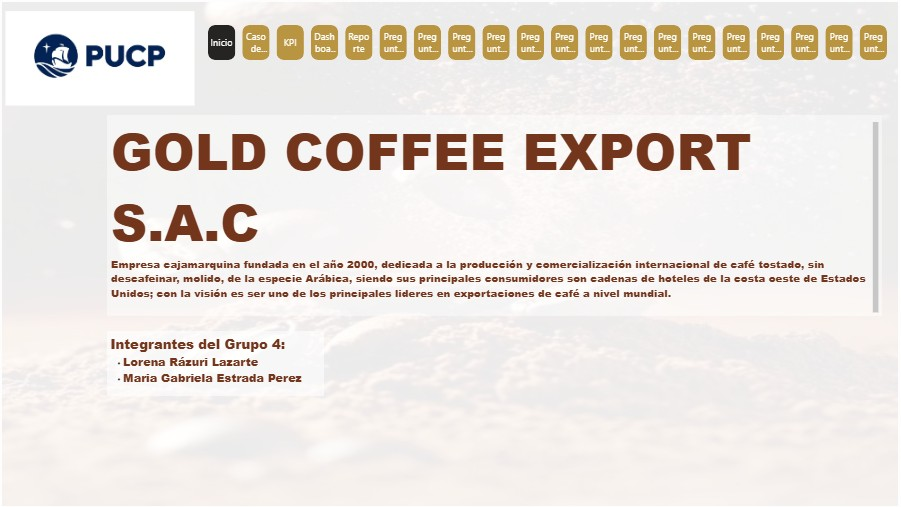
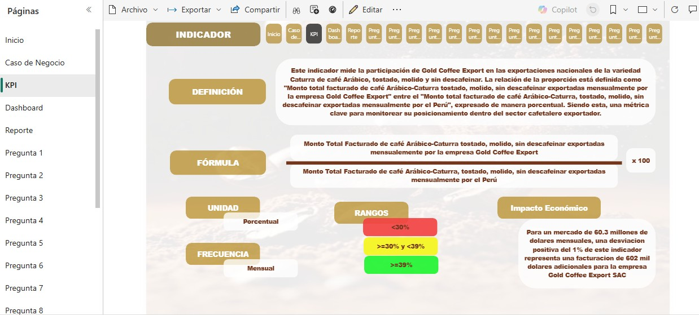
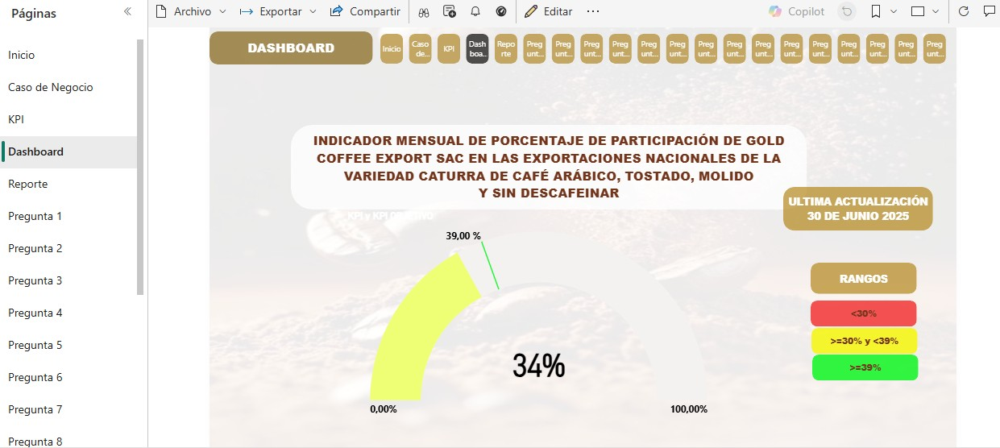
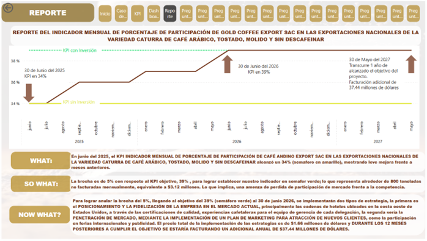

HOJA DE PRESENTACIÓN

BUSINESS CASE

DEFINICIÓN DEL KPI (KEY PERFORMANCE INDICATOR)

DASHBOARD

REPORTE DEL KPI

La capa de presentación constituye la fase final de la información procesada del Business Case de la empresa Gold Coffee Export SAC, donde la información se transforma en conocimiento accionable listo para la toma de decisiones.
Esta capa utiliza herramientas de visualización avanzadas, como Power BI y Microsoft Fabric, para convertir los datos en un recurso estratégico y operativo de alto valor, sintetizando mediante interfaces intuitivas y análisis visual para generar un impacto directo en la toma de decisiones.
La capa se nutre de los datos provenientes del Data Warehouse, los cuales han sido previamente estructurados bajo un modelo de datos robusto. Sus principales componentes son: